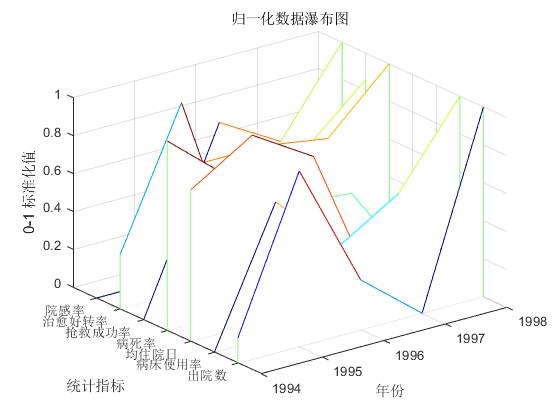

基于 TOPSIS 方法的医疗质量评估
by adqeor@XJTU
小学期属性建模课程的一个题目, 稍加更改即可适用于其他评估任务.
TOPSIS 评估的一般流程:
1. 数据标准化/规范化, 限制各指标数据的动态范围;
2. 数据同向化, 即使各个指标的最优化方向相同, 均为极大或极小;
3. 数据加权, 对各个指标赋予权重;
4. 计算距离, 记各个指标的最值分别构成 V+, V-, 每个 entity 到它们的距离分别为 D+, D-.
5. 则该 entity 的最终评分为 D- / (D+ + D-) = 1 / (1 + D+/D-)
History:
[rev0.1.1] 4 Feb. 2021:
改变文档结构: 使用分节以获得格式化的发布;
改变评估流程: 将标准化提前于同向化;
改变同向化方法: 移除观察动态范围, 进行形如 y = 10 - x 的变换, 改为简单正负变号;
解决算法错误: 计算最终得分的极性错误;
调整代码: 注释. 缩进, 变量命名, 向量化计算;
增加标准化后数据的瀑布图, 便于比较;
移除原有评价绘图, 更改命令行输出结果的格式;
[rev0.1.0] 4 Feb. 2021:
建立文档, 更改编码为 UTF-8;
11 Jul. 2020:
Last known archive.
7 Jul. 2020:
Create file.
Contents
数据准备
接下来有命令行窗口和绘图. 清空以避免影响输出.
clc;
close all;
每行存储一个 entity, 每个 entity 具有若干列的平均指标
数据格式: 0.年份: 1994-98, 在表格中没有出现
stat = [21584 76.7 7.3 1.01 78.3 97.5 2.0
24372 86.3 7.4 0.80 91.1 98.0 2.0
22041 81.8 7.3 0.62 91.1 97.3 3.2
21115 84.5 6.9 0.60 90.2 97.7 2.9
24633 90.3 6.9 0.25 95.5 97.9 3.6];
[n_Entity, n_Indicator] = size(stat);
entityType = '年份';
entityDescription = cell(1, n_Entity);
for i = 1:n_Entity
entityDescription{i} = num2str(i - 1 + 1994);
end
indicatorType = '统计指标';
indicatorDescription = {'出院数', '病床使用率', '均住院日', '病死率',...
'抢救成功率', '治愈好转率', '院感率'};
规范化评价指标
0-1 标准化, 最小-最大规范化, 离差标准化
将[min_data, max_data]线性映射到[0, 1]. x' = (x - min)/(max - min)
缺点: 对极端值/离群值敏感; 迁移应用时, 如新数据映射后不在 [0,1], 运算时却不考虑超限情况, 可能引发错误.
z-score 标准化, 零-均值规范化, 标准差标准化.
x' = (x - x_bar)/sigma
当前应用最多的方法, 但受离群点影响大.
可用中位数M替代均值, 再用绝对标准差 sigma(x_i - W) 替代标准差. 其中W可以是平均数, 也可以是中位数.
小数定标标准化
x' = x/10^k, 进而将数值映射到[-1, 1]
适用于大动态范围的数据
stdMethod = '0-1';
switch stdMethod
case '0-1'
stat_std = (stat - min(stat)) ./ (max(stat) - min(stat));
case 'z-score'
stat_std = zscore(stat);
otherwise
warning('No proper standarize method specified. Use z-score by default.');
stat_std = 2 + zscore(stat);
stdMethod = 'z-score';
end
对归一化的数据可视化
colormap(jet);
waterfall(stat_std');
title('归一化数据瀑布图');
xlabel(entityType); xticks(1:n_Entity); xticklabels(entityDescription);
ylabel(indicatorType); yticks(1:n_Indicator); yticklabels(indicatorDescription);
zlabel(sprintf('%s 标准化值', stdMethod));

数据同向化
数据同向化: 进行变换, 使所有指标的最优化方向相同
从实际问题, 希望第1 2 5 6号指标极大, 3 4 7号极小
下面取极大为同向化方向
stat_uniDir = stat_std;
stat_uniDir(:,3) = -stat_uniDir(:,3);
stat_uniDir(:,4) = -stat_uniDir(:,4);
stat_uniDir(:,7) = -stat_uniDir(:,7);
评价指标赋权
不同的指标(在归一化后)具有不同的权重
weight = ones(1, n_Indicator);
weight = weight/sum(weight);
stat_weighted = weight .* stat_std;
stat_simpleWeighted = stat_std * weight';
TOPSIS 综合评价参数计算
向量距离, 欧几里得距离
p = 2;
R_p2 = 1 ./ ( 1 + vecnorm(stat_weighted - max(stat_weighted), p, 2)./vecnorm(stat_weighted - min(stat_weighted), p, 2));
p = 1;
R_p1 = 1 ./ ( 1 + vecnorm(stat_weighted - max(stat_weighted), p, 2)./vecnorm(stat_weighted - min(stat_weighted), p, 2));
fprintf('TOPSIS 评判结果:\n\n年\t\tTOPSIS\t\t简单加权\n');
for i = 1:n_Entity
fprintf('%d\t%.2f\t\t%.2f\n', i + 1993, R_p2(i), stat_simpleWeighted(i));
end
TOPSIS 评判结果:
年 TOPSIS 简单加权
1994 0.39 0.32
1995 0.65 0.73
1996 0.49 0.49
1997 0.43 0.41
1998 0.60 0.69